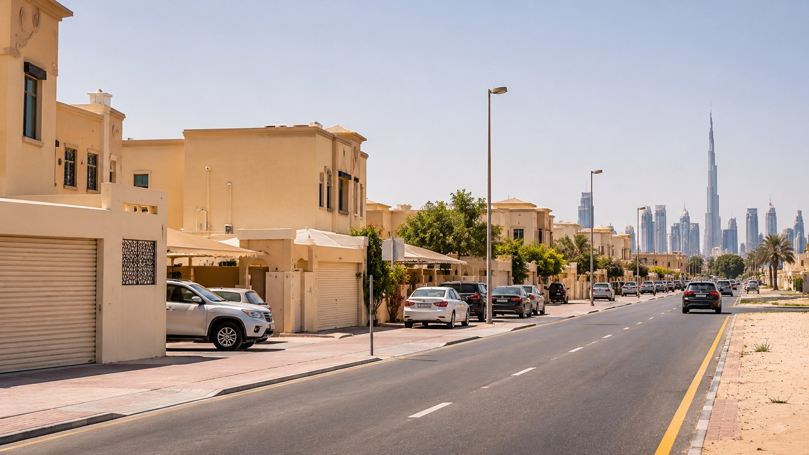

What you can do
Arrange clearly labelled shared bins, resident workshops and collection partnerships.
🌱
TOPIC 05
Community gardens and green spaces
The problem
Limited greenery reduces opportunities for outdoor activity and connection.
Why it matters
Neighbourhoods may become hotter and less inviting.
Supporting fact
Dubai 2040 aims to double green and leisure areas.
[2]
What you can do
Create accessible gardens with native plants, efficient irrigation and shared maintenance.
🌳
TOPIC 06
Urban heat reduction
The problem
Dark surfaces, dense buildings and limited vegetation trap heat.
Why it matters
Hot streets discourage walking and increase cooling needs.
Supporting fact
The IPCC identifies heat-absorbing materials and limited vegetation as urban heat island drivers.
[8]
What you can do
Add shade trees, covered walkways, reflective materials and suitable green spaces.
A better city starts here
Imagine a Sustainable Dubai
Explore two conceptual neighbourhood designs. The comparison is illustrative, not a prediction or documentary photograph.

ConventionalSustainable
↔
Conventional community
High car dependency · Limited shade · High energy consumption · Limited greenery
Sustainable community
Public transport and cycling · Shaded pathways · Efficient buildings and renewable energy · Parks and gardens
Connected transport, shade and efficient buildings can reduce emissions and heat exposure while improving access, comfort and opportunities for neighbours to meet.
[7]